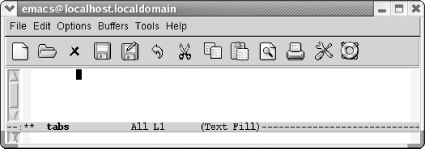
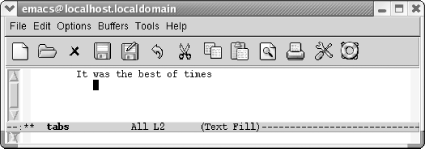
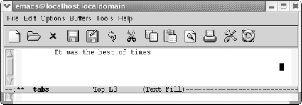
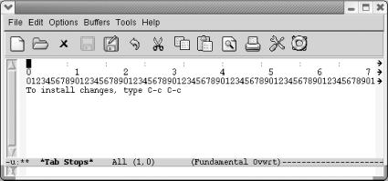
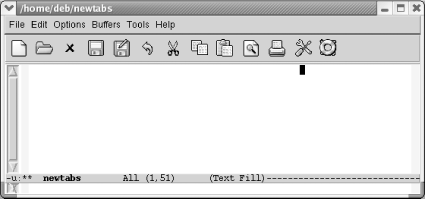
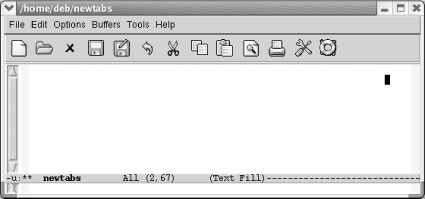
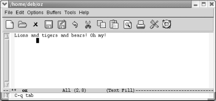

{% include JB/setup %}
{% raw %}
<div>
<div class="calibre24"></div><div class="book" xml:lang="en"><div class="book"><div class="book"><div class="book"><div class="calibre24"></div><h1 class="title"><a id="gnu3-CHP-7" class="calibre1"></a>Chapter 7. Simple Text Formatting and Specialized Editing</h1></div></div></div><p class="copyright">Emacs is fundamentally a text editor, rather than a word processor:
it is a tool that creates files containing exactly what you see on
the screen rather than a tool that makes text files look beautiful
when printed. However, Emacs does give you the capability to do the
following:</p><div class="book"><ul class="itemizedlist"><li class="listitem"><p class="copyright">Indent text using tabs and other indentation tricks.</p></li><li class="listitem"><p class="copyright">Center words, lines, and paragraphs of text.</p></li><li class="listitem"><p class="copyright">Hide and show portions of a document using outline mode, which gives
you a feel for a document's overall structure.
Outline mode can make it easier to go from rough outline, to detailed
outline, to rough draft, to the final product.</p></li><li class="listitem"><p class="copyright">Edit by column rather than by line (especially helpful when you
create or change tables or work with column-oriented datasets),
referred to in Emacs as <span><em class="calibre7">rectangle</em></span>
               <span><em class="calibre7">editing</em></span>.</p></li><li class="listitem"><p class="copyright">Create simple pictures using keyboard characters or the mouse.</p></li></ul></div><p class="copyright">Much of this chapter, though, focuses on some fairly simple stuff:
tabs and indenting text. We describe Emacs's
behavior in primarily two major modes: fundamental mode and text
mode. If you are a developer, you'll probably want
to write code in a mode appropriate to the language
you're using; see <a class="calibre2" href="ch09.html" title="Chapter 9. Computer Language Support">Chapter 9</a>
for details. If you use a markup language like HTML, see <a class="calibre2" href="ch08.html" title="Chapter 8. Markup Language Support">Chapter 8</a> for additional relevant information.</p><div class="book" xml:lang="en"><div class="book"><div class="book"><div class="book"><h1 class="title"><a id="gnu3-CHP-7-SECT-1" class="calibre1"></a>Using Tabs</h1></div></div></div><p class="copyright">Tabs provide an easy way to
<a id="gnu3-CHP-7-ITERM-2296" class="calibre2"></a>
            <a id="gnu3-CHP-7-ITERM-2297" class="calibre2"></a>do
some simple formatting. While we were revising this book, we found
that the way Emacs handles tabs has changed a great deal. This
section describes first how Emacs works by default and then discusses
what you can do to change the default behavior to meet your needs.</p><div class="book" xml:lang="en"><div class="book"><div class="book"><div class="book"><h2 class="title1"><a id="gnu3-CHP-7-SECT-1.1" class="calibre1"></a>How Emacs 21 Handles Tabs by Default</h2></div></div></div><p class="copyright">If you open a new file in text mode,
<a id="gnu3-CHP-7-ITERM-2298" class="calibre2"></a>
               <a id="gnu3-CHP-7-ITERM-2299" class="calibre2"></a>tabs
are set every eight spaces by default. (Programming modes have their
own indentation behavior; see <a class="calibre2" href="ch09.html" title="Chapter 9. Computer Language Support">Chapter 9</a> for
details.)</p><div class="book"><a id="ch07-3-fm2xml" class="calibre2"></a><table class="calibre8"><colgroup class="calibre9"><col class="calibre10"/></colgroup><tbody class="calibre15"><tr class="calibre12"><td class="calibre17">
                           <p class="copyright">Press <span><strong class="calibre5">Tab</strong></span>.</p>
                        </td></tr><tr class="calibre12"><td class="calibre17">
                           <p class="copyright">
                              </p><div class="book"><div class="mediaobject"><a id="I_7_tt190" class="calibre2"></a></div></div><p class="copyright">
                           </p>
                        </td></tr><tr class="calibre12"><td class="calibre19">
                           <p class="copyright">Pressing <span><strong class="calibre5">Tab</strong></span> in text mode or
fundamental mode inserts a tab character that moves the cursor
forward eight columns by default.</p>
                        </td></tr></tbody></table></div><p class="copyright">Watch what happens when we type a sentence. The default tab stops
change automatically.</p><div class="book"><a id="ch07-4-fm2xml" class="calibre2"></a><table class="calibre8"><colgroup class="calibre9"><col class="calibre10"/></colgroup><tbody class="calibre15"><tr class="calibre12"><td class="calibre17">
                           <p class="copyright">Type: <span><strong class="calibre5">It was the best of times Enter Tab
Tab</strong></span>
                           </p>
                        </td></tr><tr class="calibre12"><td class="calibre17">
                           <p class="copyright">
                              </p><div class="book"><div class="mediaobject"><a id="I_7_tt191" class="calibre2"></a></div></div><p class="copyright">
                           </p>
                        </td></tr><tr class="calibre12"><td class="calibre19">
                           <p class="copyright">Pressing <span><strong class="calibre5">Tab</strong></span> twice moves the cursor
under the word <span><em class="calibre7">was</em></span>, clearly less than eight
columns.</p>
                        </td></tr></tbody></table></div><p class="copyright">Every time you press <span><strong class="calibre5">Tab</strong></span>, Emacs
moves the cursor under the next word. This is the behavior that many
people expect when writing code. Neatly lined up code is easier to
read.</p><p class="copyright">As we experimented with this feature, we would tab across under each
word, and press <span><strong class="calibre5">Enter</strong></span>. What happens
next is surprising if you are not expecting it. Emacs considers that
newline to be the only character you typed on the line, so pressing
<span><strong class="calibre5">Tab</strong></span> on a subsequent line brings you
nearly to the end of the line.</p><div class="book"><a id="ch07-5-fm2xml" class="calibre2"></a><table class="calibre8"><colgroup class="calibre9"><col class="calibre10"/></colgroup><tbody class="calibre15"><tr class="calibre12"><td class="calibre17">
                           <p class="copyright">Press <span><strong class="calibre5">Tab</strong></span> repeatedly to the end of
the window, press <span><strong class="calibre5">Enter</strong></span>, then press
<span><strong class="calibre5">Tab</strong></span> once.</p>
                        </td></tr><tr class="calibre12"><td class="calibre17">
                           <p class="copyright">
                              </p><div class="book"><div class="mediaobject"><a id="I_7_tt192" class="calibre2"></a></div></div><p class="copyright">
                           </p>
                        </td></tr><tr class="calibre12"><td class="calibre19">
                           <p class="copyright">Emacs moves the cursor to the column where you pressed <span><strong class="calibre5">Enter</strong></span>.</p>
                        </td></tr></tbody></table></div><p class="copyright">If you press <span><strong class="calibre5">Enter</strong></span> but
don't press <span><strong class="calibre5">Tab</strong></span> at
all, the indentation level moves back to the left margin.</p><p class="copyright">Changing tabs to align with each word can be helpful, if, for
example, you're typing tables. However, the default
tab behavior may not be helpful to you in all situations. If you are
interested in changing the default behavior, read on and
we'll describe how to get Emacs to do what you want
it to do.</p></div><div class="book" xml:lang="en"><div class="book"><div class="book"><div class="book"><h2 class="title1"><a id="gnu3-CHP-7-SECT-1.2" class="calibre1"></a>Changing Tab Stops</h2></div></div></div><p class="copyright">By default (and if text is not lining up
<a id="gnu3-CHP-7-ITERM-2300" class="calibre2"></a>with some previous line of text),
tabs are set every eight characters. Emacs allows you to change the
positions of the tab stops. To change the tab stops, type <span><strong class="calibre5">M-x</strong></span> 
               <span><strong class="calibre5">edit-tab-stops</strong></span>. A <code class="calibre21">*Tab
Stops*</code> buffer appears.</p><div class="book"><a id="ch07-6-fm2xml" class="calibre2"></a><table class="calibre8"><colgroup class="calibre9"><col class="calibre10"/></colgroup><tbody class="calibre15"><tr class="calibre12"><td class="calibre17">
                           <p class="copyright">Type: <span><strong class="calibre5">M-x edit-tab-stops</strong></span>
                           </p>
                        </td></tr><tr class="calibre12"><td class="calibre17">
                           <p class="copyright">
                              </p><div class="book"><div class="mediaobject"><a id="I_7_tt193" class="calibre2"></a></div></div><p class="copyright">
                           </p>
                        </td></tr><tr class="calibre12"><td class="calibre19">
                           <p class="copyright">You now see a tab stop ruler; colons show the locations of tab stops.</p>
                        </td></tr></tbody></table></div><p class="copyright">The colons in the first line of <a id="gnu3-CHP-7-ITERM-2301" class="calibre2"></a>
               <a id="gnu3-CHP-7-ITERM-2302" class="calibre2"></a>the display show you where tab
stops are currently located. The next two lines form a ruler that
shows each character position on the line. To insert a tab, use
<span><strong class="calibre5">C-f</strong></span> to move to the desired column,
and then type a colon ( : ). To delete a tab, move to the desired
tab, and press <span><strong class="calibre5">Space</strong></span>. The
<code class="calibre21">*Tab Stops*</code> buffer is in overwrite mode, so these
changes won't change the position of other tabs.
Make sure that you do all your editing in the first line of the
display. Changes made to the other lines won't have
any effect.</p><p class="copyright">When you're satisfied with the tab stops, press
<span><strong class="calibre5">C-c</strong></span> 
               <span><strong class="calibre5">C-c</strong></span> to install them. If you
don't make any changes, press <span><strong class="calibre5">C-c</strong></span> 
               <span><strong class="calibre5">C-c</strong></span> to
exit the buffer. If you make some changes and then decide you
don't want them after all, kill the buffer by typing
<span><strong class="calibre5">C-x</strong></span> 
               <span><strong class="calibre5">k</strong></span> 
               <span><strong class="calibre5">Enter</strong></span>. The
default tab stops remain in effect.</p><p class="copyright">If you press <span><strong class="calibre5">C-c C-c</strong></span> to install
them, the new tab settings affect all buffers that you create but
remain in effect for this Emacs session only.</p><p class="copyright">Again, it may well appear to you that this feature
doesn't work as you would expect. Because
Emacs's default behavior tries to align with
preceding lines, changing tab stops really affects only the first
line of any buffer.</p><p class="copyright">In this example, we set the first tab at column 51, pressed <span><strong class="calibre5">C-c C-c</strong></span> to install the tab stops, and started
a new buffer. Pressing <span><strong class="calibre5">Tab</strong></span> at the
beginning of the buffer moves the cursor immediately to column 51.
That works fine.</p><div class="book"><a id="ch07-7-fm2xml" class="calibre2"></a><table class="calibre8"><colgroup class="calibre9"><col class="calibre10"/></colgroup><tbody class="calibre15"><tr class="calibre12"><td class="calibre17">
                           <p class="copyright">Press <span><strong class="calibre5">Tab</strong></span> once.</p>
                        </td></tr><tr class="calibre12"><td class="calibre17">
                           <p class="copyright">
                              </p><div class="book"><div class="mediaobject"><a id="I_7_tt194" class="calibre2"></a></div></div><p class="copyright">
                           </p>
                        </td></tr><tr class="calibre12"><td class="calibre19">
                           <p class="copyright">Cursor moves to column 51.</p>
                        </td></tr></tbody></table></div><p class="copyright">Now we press <span><strong class="calibre5">Tab</strong></span> a few more times,
followed by <span><strong class="calibre5">Enter</strong></span> to move to a new
line.</p><p class="copyright">When we press <span><strong class="calibre5">Tab</strong></span> on the second
line, Emacs views the newline as the only item on the last line.
Pressing <span><strong class="calibre5">Tab</strong></span> moves us right to the
end of the line.</p><div class="book"><a id="ch07-8-fm2xml" class="calibre2"></a><table class="calibre8"><colgroup class="calibre9"><col class="calibre10"/></colgroup><tbody class="calibre15"><tr class="calibre12"><td class="calibre17">
                           <p class="copyright">Press <span><strong class="calibre5">Tab</strong></span> on the next line.</p>
                        </td></tr><tr class="calibre12"><td class="calibre17">
                           <p class="copyright">
                              </p><div class="book"><div class="mediaobject"><a id="I_7_tt195" class="calibre2"></a></div></div><p class="copyright">
                           </p>
                        </td></tr><tr class="calibre12"><td class="calibre19">
                           <p class="copyright">Emacs moves to the end of the line.</p>
                        </td></tr></tbody></table></div><p class="copyright">As you can see, changing tab stops in this way is of limited efficacy
if you're going to add blank lines between rows of
your table or whatever you're typing.
You'd have to work around this by adding blank lines
after typing the whole table, perhaps using a macro as described in
<a class="calibre2" href="ch06.html" title="Chapter 6. Writing Macros">Chapter 6</a>.</p></div><div class="book" xml:lang="en"><div class="book"><div class="book"><div class="book"><h2 class="title1"><a id="gnu3-CHP-7-SECT-1.3" class="calibre1"></a>What if You Want Literal Tabs?</h2></div></div></div><p class="copyright">Let's say that all this tab
<a id="gnu3-CHP-7-ITERM-2303" class="calibre2"></a>
               <a id="gnu3-CHP-7-ITERM-2304" class="calibre2"></a>finery is getting on your nerves. You
don't want context-sensitive indenting; you
don't even want to change tab stops. There is a way
to make Emacs treat tabs just like a regular old typewriter did,
moving over eight characters at a time.<sup class="calibre6">[<a id="gnu3-CHP-7-FNOTE-1" href="#ftn.gnu3-CHP-7-FNOTE-1" class="calibre2">1</a>]</sup>
            </p><p class="copyright">To insert rigid, typewriter-style tabs, press <span><strong class="calibre5">C-q Tab</strong></span>. In theory, this should insert a tab
character into the file, which would look like <code class="calibre21">^I</code>.
In practice, it moves the cursor forward rigidly eight columns.</p><div class="book"><a id="ch07-9-fm2xml" class="calibre2"></a><table class="calibre8"><colgroup class="calibre9"><col class="calibre10"/></colgroup><tbody class="calibre15"><tr class="calibre12"><td class="calibre17">
                           <p class="copyright">Type: <span><strong class="calibre5">C-q Tab</strong></span>
                           </p>
                        </td></tr><tr class="calibre12"><td class="calibre17">
                           <p class="copyright">
                              </p><div class="book"><div class="mediaobject"><a id="I_7_tt196" class="calibre2"></a></div></div><p class="copyright">
                           </p>
                        </td></tr><tr class="calibre12"><td class="calibre19">
                           <p class="copyright">The cursor moves eight columns forward and does not align with the
text in the previous line.</p>
                        </td></tr></tbody></table></div><p class="copyright">
               <span><strong class="calibre5">C-q Tab</strong></span> does in fact insert a tab
character in the file. You can check that by erasing it with a single
press of the <span><strong class="calibre5">Del</strong></span> key.</p></div><div class="book" xml:lang="en"><div class="book"><div class="book"><div class="book"><h2 class="title1"><a id="gnu3-CHP-7-SECT-1.4" class="calibre1"></a>Changing Tab Width</h2></div></div></div><p class="copyright">One problem with tabs is
<a id="gnu3-CHP-7-ITERM-2305" class="calibre2"></a>that
there is no universal definition of what a tab means. In
<span><em class="calibre7">vi</em></span>, the default tab width is four columns versus
eight columns in Emacs. Further, Unix generally favors eight columns
for tabs while some operating systems tend to use four spaces. Emacs
uses eight columns by default no matter what platform
it's running on. If you view another
user's file in Emacs, Emacs interprets the tabs as
eight columns each, throwing things off. For this reason, you might
want to set your tab default to four columns by adding this line to
your <span><em class="calibre7">.emacs</em></span> file:</p><a id="I_7_tt197" class="calibre2"></a><pre class="programlisting"> (setq-default tab-width 4)</pre><p class="copyright">You have to press <span><strong class="calibre5">C-q Tab</strong></span> to have
the modified tab width take effect.</p></div><div class="book" xml:lang="en"><div class="book"><div class="book"><div class="book"><h2 class="title1"><a id="gnu3-CHP-7-SECT-1.5" class="calibre1"></a>Tabs and Spaces</h2></div></div></div><p class="copyright">Another characteristic
<a id="gnu3-CHP-7-ITERM-2306" class="calibre2"></a>of
Emacs's default behavior is the fact that it may
insert a combination of tabs and spaces when you press <span><strong class="calibre5">Tab</strong></span>. Try to erase a few
"tabs" and you'll
see that often it isn't one character, but the
equivalent number of spaces or a combination of tabs and spaces. Of
course, this largely depends on the tab stops compared to setting of
the <code class="calibre21">tab-width</code> variable. If you set tab stops that
are multiples of six while you have a <code class="calibre21">tab-width</code> of
4 or 8, Emacs is going to have to use a combination of tabs and
spaces to achieve the desired tab stops.</p><p class="copyright">If you want Emacs to insert spaces for indentation rather than tab
characters, add this line to your <span><em class="calibre7">.emacs</em></span> file:</p><a id="I_7_tt198" class="calibre2"></a><pre class="programlisting">(setq-default indent-tabs-mode nil)</pre><p class="copyright">With this setting, Emacs inserts only spaces when you press <span><strong class="calibre5">Tab</strong></span>. Pressing <span><strong class="calibre5">C-q
Tab</strong></span> instead inserts a literal tab character.
It's safe to say you won't enter
tab characters accidentally with this setting.</p></div><div class="book" xml:lang="en"><div class="book"><div class="book"><div class="book"><h2 class="title1"><a id="gnu3-CHP-7-SECT-1.6" class="calibre1"></a>Changing Tabs to Spaces (and Vice Versa)</h2></div></div></div><p class="copyright">We've just talked about a
<a id="gnu3-CHP-7-ITERM-2307" class="calibre2"></a>
               <a id="gnu3-CHP-7-ITERM-2308" class="calibre2"></a>way to make sure that Emacs inserts
spaces instead of tabs. But what if you inherit a file and it has
tabs that you want to change to spaces?</p><p class="copyright">Emacs provides a command to banish tabs from your files. You can use
tabs for editing and then convert all of the tabs to the appropriate
number of spaces so that the appearance of your file
doesn't change. Unlike tabs, a space is almost
always well defined. The command for eliminating tabs is <span><strong class="calibre5">M-x</strong></span> 
               <span><strong class="calibre5">untabify</strong></span>.
There's a corresponding command to convert spaces
into tabs: <span><strong class="calibre5">tabify</strong></span>. However, we trust
that you'll take our advice and forget about it.</p><p class="copyright">The <span><strong class="calibre5">untabify</strong></span> command works on a
region. Therefore, to use it, you must put the mark somewhere in the
buffer (preferably at the beginning), move to some other place in the
buffer (preferably the end), and type <span><strong class="calibre5">M-x</strong></span> 
               <span><strong class="calibre5">untabify</strong></span>
               <span><strong class="calibre5">Enter</strong></span>. The command <span><strong class="calibre5">C-x</strong></span> 
               <span><strong class="calibre5">h</strong></span> (for
<span><strong class="calibre5">mark-whole-buffer</strong></span>) automatically
puts the cursor at the beginning of the buffer and the mark at the
end. It makes untabification a bit easier because you can do it all
at once with the simple sequence <span><strong class="calibre5">C-x</strong></span>
               <span><strong class="calibre5">h</strong></span> 
               <span><strong class="calibre5">M-x</strong></span> 
               <span><strong class="calibre5">untabify</strong></span>
               <span><strong class="calibre5">Enter</strong></span>.</p><p class="copyright">
               <a class="calibre2" href="ch07.html#gnu3-CHP-7-TABLE-1" title="Table 7-1. Tab commands">Table 7-1</a> shows the tab commands
we've covered in this section.</p><div class="book"><a id="gnu3-CHP-7-TABLE-1" class="calibre2"></a><p class="title2"><b class="calibre25">Table 7-1. Tab commands</b></p><div class="table-contents"><a id="gnu3-CHP-7-ITERM-2309" class="calibre2"></a><a id="gnu3-CHP-7-ITERM-2310" class="calibre2"></a><table summary="Tab commands" class="calibre8"><colgroup class="calibre9"><col class="calibre10"/><col class="calibre10"/><col class="calibre10"/></colgroup><thead class="calibre11"><tr class="calibre12"><th class="calibre26">
                           <p class="copyright">Keystrokes</p>
                        </th><th class="calibre26">
                           <p class="copyright">Command name</p>
                        </th><th class="calibre27">
                           <p class="copyright">Action</p>
                        </th></tr></thead><tbody class="calibre15"><tr class="calibre12"><td class="calibre28">
                           <p class="copyright">(none)</p>
                        </td><td class="calibre28">
                           <p class="copyright">
                              <span><strong class="calibre5">edit-tab-stops</strong></span>
                           </p>
                        </td><td class="calibre29">
                           <p class="copyright">Open a buffer called <code class="calibre21">*Tab Stops*</code> where you can
change the tab settings.</p>
                        </td></tr><tr class="calibre12"><td class="calibre28">
                           <p class="copyright">(none)</p>
                        </td><td class="calibre28">
                           <p class="copyright">
                              <span><strong class="calibre5">untabify</strong></span>
                           </p>
                        </td><td class="calibre29">
                           <p class="copyright">Change all tabs into the equivalent number of spaces.</p>
                        </td></tr><tr class="calibre12"><td class="calibre30">
                           <p class="copyright">(none)</p>
                        </td><td class="calibre30">
                           <p class="copyright">
                              <span><strong class="calibre5">tabify</strong></span>
                           </p>
                        </td><td class="calibre31">
                           <p class="copyright">Change groups of three or more spaces to tabs where possible without
affecting the text placement.</p>
                        </td></tr></tbody></table></div></div><br class="book"/></div></div><div class="book"><br class="book"/><hr class="calibre4"/><div class="book"><p class="copyright"><sup class="calibre6">[<a id="ftn.gnu3-CHP-7-FNOTE-1" href="#gnu3-CHP-7-FNOTE-1" class="calibre2">1</a>] </sup>You
can't change tab stops with this method, but you can
change tab width. We'll cover this shortly.</p></div></div></div></div>

{% endraw %}

